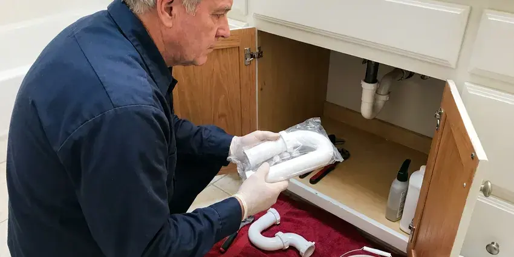

Shower Repair in Weston, FL
Facing shower issues in Weston, FL? HDF Plumbing provides quick and reliable shower repair services to get your bathroom back in order.
- Prompt, Local Plumbers
- Valve Cartridges Stocked
- Upfront Flat-Rate Pricing
- Leak Detection Available

Fix Your Leaking or Low-Pressure Shower Today in Weston, FL.
Contact HDF Plumbing today for reliable plumbing solutions.
Expert Shower Repair Services for Weston, FL Homeowners
HDF Plumbing specializes in all types of shower repair for homes across Weston, FL. Whether you are dealing with a leaky showerhead, a clogged drain, or changing water temperatures, our skilled technicians have the tools and experience to diagnose and fix the problem quickly.
Our expertise includes:
- Fixing leaks in shower heads, valves, and diverters.
- Pressure-balance and thermostatic valve repair for steady temperatures
- Repairing hot and cold water issues

Additional Bathroom Plumbing Services in Weston, FL
From toilets to showers, our bathroom plumbing team in Weston, FL repairs, installs, and replaces every fixture with clean, code-compliant work.


Customers
Why Choose HDF Plumbing for Shower Repair in Weston, FL?
Shower leaks are often hidden, and by the time a stain appears, damage has already spread. We find the real source so you fix the problem one time.
- Skilled Technicians, Our plumbers are licensed, insured, and continuously trained on the latest repair techniques and plumbing codes.
- Hidden Leak Checks, Moisture testing finds leaks behind tile before they spread.
- Correct Cartridges, We match the exact cartridge to your valve brand and style.
Citywide Coverage
From the center of Weston to the surrounding suburbs, our wide service area means we can get a plumber to your door efficiently. We are dedicated to providing timely and effective shower repair services across the entire Weston area.
Experienced Team
Each plumber at HDF Plumbing brings years of hands-on experience in diagnosing and repairing shower malfunctions. We understand the specific components and common failure points, resulting in accurate and lasting repairs for our Weston customers.
Safety-First Approach
Our repairs follow plumbing code for pressure-balance and thermostatic valves. If a wall must be opened, we minimize the opening and seal it properly.
Trusted Certified Weston Plumbing Services Professionals
At HDF Plumbing, we take pride in providing certified plumbing services throughout Weston, FL. Backed by leading industry credentials, our experienced plumbers combine technical skill with genuine customer care. Whether it is repair, installation, or maintenance, we follow strict safety and quality standards to deliver long-lasting results you can trust.
Call Us Now PHCC Plumbing Contractor Recognition
PHCC Plumbing Contractor Recognition Better Business Bureau (BBB) Accreditation
Better Business Bureau (BBB) Accreditation Angi Certified Pro
Angi Certified Pro ISO 9001 Quality Management Certification
ISO 9001 Quality Management CertificationReliable Shower Repair Services in Weston, FL
Shower Pan and Wall Leak Repair in Weston, FL
Leaks under the shower pan or behind tile can cause rot, mold and stains on ceilings below. We use moisture meters and flood tests to find failed grout, cracked pans or leaking pipe joints. Then we repair the source, whether that means resealing a drain, replacing a valve or rebuilding a pan. On slab homes, these leaks can damage flooring in adjoining rooms.

Low Shower Pressure Repair in Weston, FL
Weak shower pressure is often caused by mineral buildup in the showerhead or flow restrictor. It can also come from a clogged cartridge or a failing pressure regulator. We clean or replace the showerhead, check the cartridge and test whole-home pressure if needed. Most low-pressure issues are fixed quickly.
Shower Diverter Repair in Weston, FL
A diverter sends water from the tub spout to the showerhead. When it wears out, water keeps running from the spout and shower pressure drops. We replace diverter spouts, three-handle diverter stems and multi-function diverter valves. This brings back full flow to the showerhead.
Leaky Shower Head Repair in Weston
A dripping shower head wastes water and can be incredibly annoying. Our plumbers can promptly identify the cause, whether it is a worn-out washer, O-ring, or a faulty cartridge. We carry common replacement parts on our trucks to ensure a fast fix. We will stop the leak, saving you money on your water bill and preventing potential water damage in your bathroom.
Shower Drain Repair in Weston
Slow shower drains are typically clogged with hair and soap scum, often hardened by mineral deposits. We clear the drain with augers and check the drain assembly for leaks. Loose or cracked drain bodies can let water seep under the pan. We repair or replace drain components when needed.
Leaky Shower Faucet Repair in Weston
A dripping shower faucet can waste hundreds of gallons of water a year and drive up your utility bill. Our plumbers quickly identify the source of the leak, which is often a worn-out O-ring, washer, or cartridge within the faucet assembly. We carry a wide range of replacement parts for common brands like Delta, Moen, Kohler, and Price Pfister, allowing for same-day repair. We will make sure the new components are correctly installed, stopping the drip and saving you water.
Leaking Shower Valve Repair in Weston
A shower that drips after it is turned off typically has a worn cartridge or seals. Hard water scale scratches cartridge surfaces and breaks down O-rings faster than soft water does. We replace the cartridge with a genuine part and lubricate the valve with silicone grease. This stops the drip and makes the handle turn smoothly again.

Shower Temperature Problem Repair in Weston
If your shower turns cold when someone flushes, the pressure-balance spool may be stuck. If you cannot get enough hot water, the anti-scald limit stop may be set too low or the cartridge may be worn. We repair or replace pressure-balance and thermostatic valves and adjust limit stops. Your shower will hold a steady, consistent temperature.
Shower Repair Near Me in Weston, FL
When you search for shower repair near me in Weston, FL, HDF Plumbing is your dependable local choice. Our team is located to provide prompt and efficient service throughout the area. We take pride in quick response times for all your shower plumbing needs.
When you search for shower repair near me in Weston, FL, you want a local company that understands your needs and can respond quickly. HDF Plumbing is rooted in the community, providing fast, reliable service right to your neighborhood.
HDF Plumbing at a Glance
- Fully licensed plumbing team covering Weston, FL
- Same-day appointments and 24/7 emergency response
- Upfront, flat-rate pricing before work begins
- 4.9-star rated by 739+ Florida customers
Weston Map
Weston Information
- Population
- 68,181
- Area codes
- 754/954/305
- Service area
- Weston and communities within 40 miles
- Nearby
- Pembroke Pines, Davie, Miramar, Sunrise
Many wells in Florida produce water with a sulfur smell or high iron, which often calls for treatment to protect fixtures and appliances. Prompt shower repair in Weston, FL prevents hidden leaks and keeps temperatures safe.
Expert Services
Trust our professionals for reliable HDF Plumbing solutions in Weston, FL.
Our Specialized Plumbing Services in Weston, FL
At HDF Plumbing, we provide a complete range of plumbing services across Weston, FL. From leak detection to full system installations, our team ensures fast, precise, and affordable service for both residential and commercial properties. Explore our core services below:


How Our Shower Repair Process Works in Weston, FL
We diagnose the problem, fix it with the right parts and test carefully before we leave.
Request a Quote
Call (904) 925-7356 and describe your shower issue, like a drip, low pressure or temperature swings. We give you a time window and a price estimate.
Diagnose the Shower
We inspect the valve, head, diverter and drain and test for hidden leaks. You approve a flat price before we start.
Repair and Test
We replace worn parts, set anti-scald limits and test pressure and temperature. We check for leaks and clean up before leaving.
Frequently Asked Questions About Shower Repair in Weston
The cost of shower repair in Weston, FL varies widely depending on the issue. A simple O-ring replacement might cost between $100 and $250, while a full shower valve replacement could range from $350 to $800, including parts and labor. We provide a detailed estimate before any work begins.
Low shower water pressure can be caused by several factors, including mineral buildup in the showerhead, a faulty pressure balancing valve, sediment in your water heater, or even a leak in your water supply lines. Our plumbers can diagnose the exact cause and recommend the appropriate repair.
While some minor issues like a clogged showerhead might be DIY-friendly, most shower repairs, especially those involving water pressure, valve replacement, or significant leaks, are best left to a professional. Improper repair can lead to costly water damage or code violations. For homeowners in Weston, FL, it is safer to call HDF Plumbing.
Leaks behind the wall are often due to a faulty shower valve, loose pipe connections, or cracks in the shower pan or tile grout. These leaks can be serious, leading to mold growth and structural damage. Our team uses professional detection equipment to pinpoint the leak source and repair it with minimal wall disruption.
We repair Moen, Delta, Kohler, Pfister, American Standard, Symmons and many others. We carry common cartridges on our trucks.
Low water pressure can be caused by mineral buildup in the shower head or pipes, a faulty pressure-balancing valve, a partially closed main water valve, or even issues with your home's water heater. Our plumbers can pinpoint the exact cause.
Start by cleaning the showerhead to remove mineral buildup. If pressure stays low, the cartridge, flow restrictor or a pressure regulator may need service.
Cleaning or replacing a showerhead is an easy DIY task. Valve cartridge replacements and leak repairs behind tile are best handled by a plumber to avoid damage.
What People Are Saying About Our Plumbing Experts?

Robert G.
The trenchless sewer replacement saved our front yard. They walked us through the camera inspection footage first so we knew exactly what we were paying for.
Sewer Line Replacement · Tamarac, FL
Laura S.
I scheduled a water heater replacement, and the team made the process smooth and affordable. The new unit works perfectly, and they cleaned up after completing the job.
Water Heater Replacement · Davie, FL
Patricia H.
We had a slab leak that two other companies could not find. HDF Plumbing located it in under an hour, explained our options, and the price matched the quote to the dollar.
Slab Leak Repair · Tamarac, FLJames P.
Our commercial plumbing system had a leak under the sink, and HDF Plumbing handled it professionally. The plumbers arrived quickly and restored everything without disruption to our customers.
Commercial Plumbing · Lauderhill, FL
Mark T.
When our office needed drain cleaning, HDF Plumbing provided quick, reliable service. The plumber arrived on time and made sure every drain flowed perfectly before leaving. Very satisfied.
Drain Cleaning · Weston, FL
Emily R.
I called HDF Plumbing for plumbing repair, and the technician was fast, polite, and thorough. They explained the problem clearly and fixed it the same day. I will definitely hire them again. Highly recommended!
Plumbing Repair · Miramar, FL